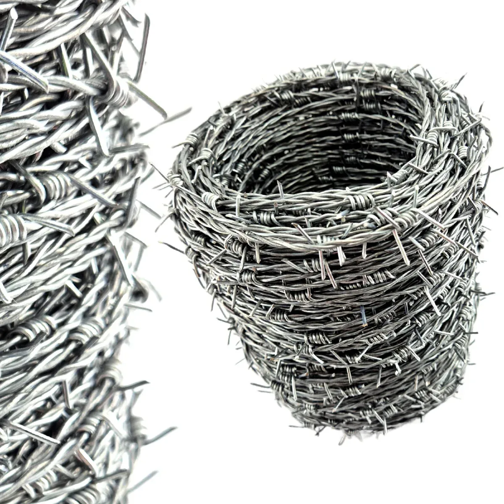
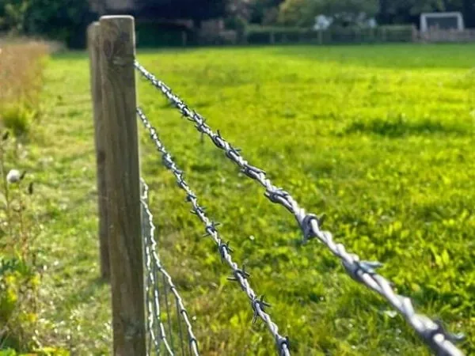
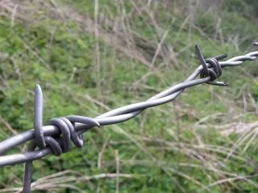
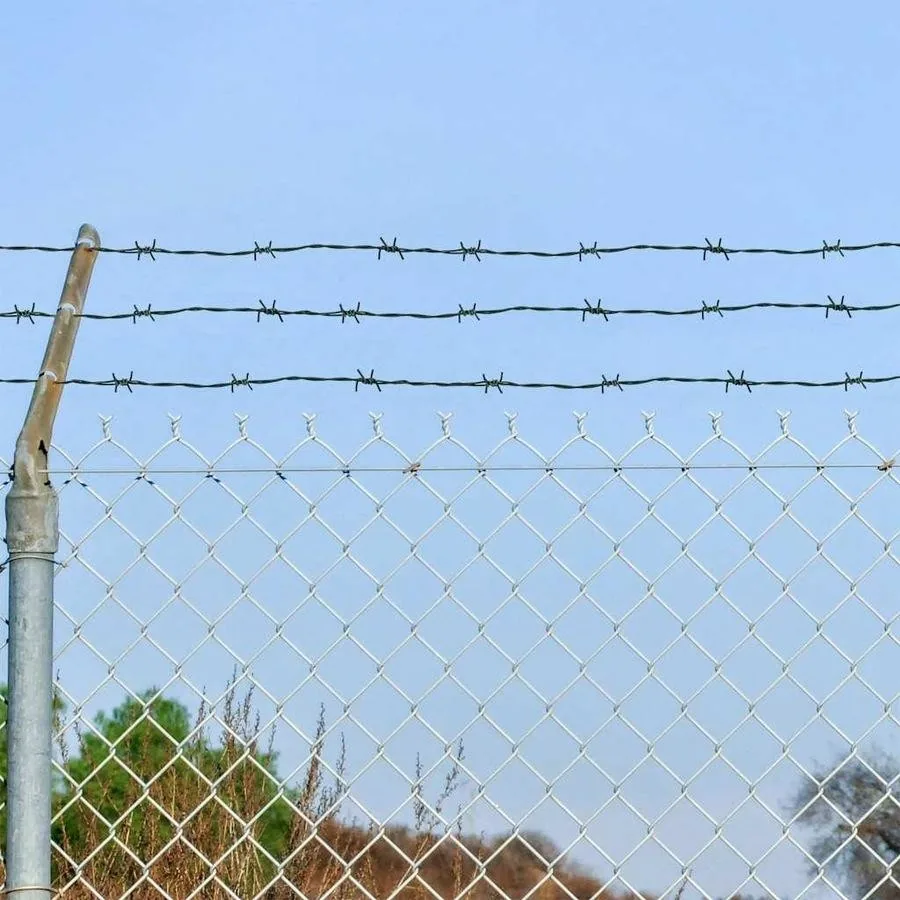
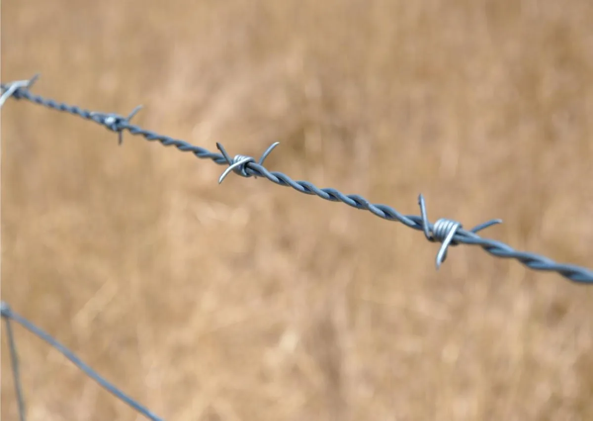
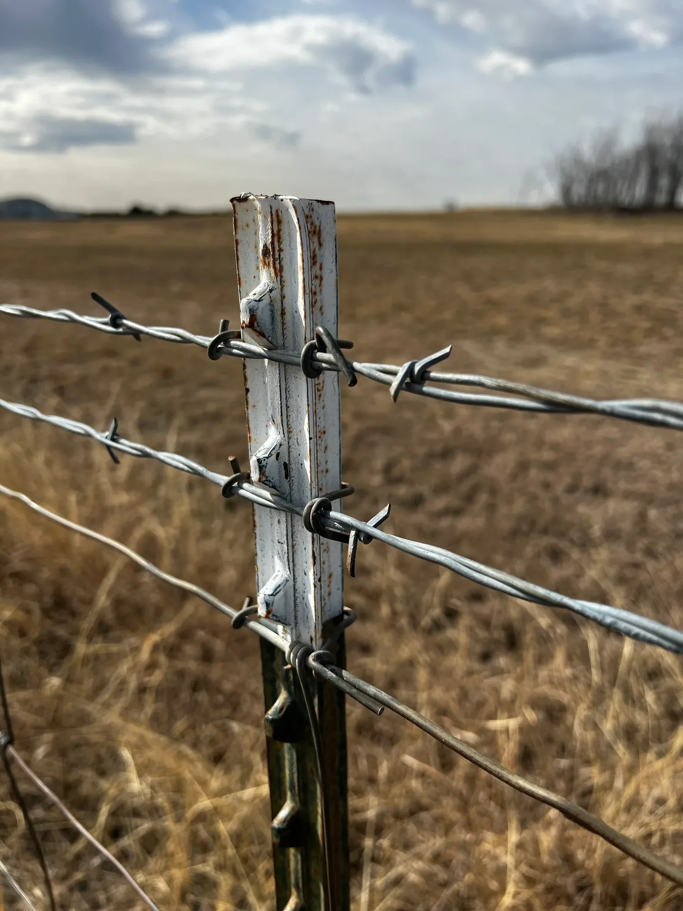

Farm Boundaries
Multiple tensioned strands along suitable posts for rural land, paddocks, and livestock boundaries.
Cost-Effective Boundary Security

Galvanised barbed wire provides a visible deterrent for farms, livestock boundaries, rural properties, and perimeter reinforcement across Zimbabwe.
Tell us about the boundary and we will help determine the appropriate material quantity and installation approach.
Spaced sharp barbs make the boundary difficult to cross and clearly communicate restricted access.
Galvanised wire helps resist corrosion and supports dependable service in exposed conditions.
A practical option for long agricultural and rural boundaries where material value matters.
Suitable for farm strands, boundary reinforcement, livestock areas, and fence-top security.
With appropriate posts, strainers, stays, and tools, long fence lines can be installed efficiently.
Open strand construction makes damaged, loose, or vegetation-obstructed sections easier to identify.
See the wire construction, agricultural strand layouts, post fixing, and fence-top reinforcement applications.





Material requirements change with the fence purpose, length, post spacing, terrain, and the number of strands required.
We establish the boundary length, corners, gates, terrain, and access.
We determine wire quantities, strand layout, posts, strainers, and stays.
Wire is installed with consistent spacing and appropriate tension along the line.
We check fixings, strain points, corners, gates, and the completed boundary.
Azzar fenced our entire farm boundary professionally and on schedule. The quality of work is excellent and the team was highly professional throughout.